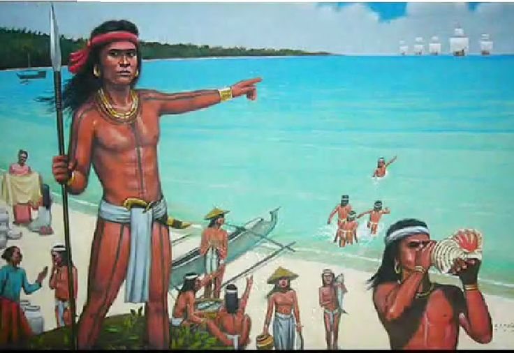
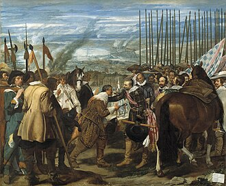

Panitikan
Ang panitikan ay nagmula sa salitang-ugat na "titik", na dinagdagan ng panlaping pang- at -an, kaya nagiging pang-titik-an. Sa mas malawak na kahulugan, ito ay ang pasulat o pasalitang pagpapahayag ng mga karanasan, kaisipan, damdamin, at hangarin ng isang tao o lipunan. Ito ay isang "salamin ng buhay" dahil ipinapakita nito ang kultura, paniniwala, at kasaysayan ng isang lahi.
Pinagmulan ng Panitikan
Ang panitikan ng Pilipinas ay may mahabang kasaysayan na nagsimula bago pa man dumating ang mga dayuhang mananakop:

Panahon ng Katutubo

Panahon ng Kastila
Panahon ng Amerikano
Bakit mahalaga ang Panitikan?
Ang panitikan ay nagsisilbing mahalagang pundasyon ng ating pagkakakilanlan at kasaysayan dahil ito ang nagsisilbing salamin ng buhay, kultura, at mga paniniwala ng isang lahi. Sa pamamagitan nito, napapanatili nating buhay ang mga tradisyon at karunungan ng ating mga ninuno na nagsisilbing gabay sa kasalukuyang henerasyon.
Hindi lamang ito nagbibigay ng aliw o pampalipas-oras, kundi isa rin itong makapangyarihang kasangkapan upang imulat ang kamalayan ng mamamayan sa mga tunay na isyung panlipunan at humubog sa ating pagkatao sa pamamagitan ng mga aral at karanasang nakapaloob sa bawat akda.
Sa madaling salita, ang panitikan ay ang kaluluwa ng isang bansa na nagbibigkis sa ating pagkakakilanlan at nagbibigay ng lalim sa ating pag-unawa sa mundo.